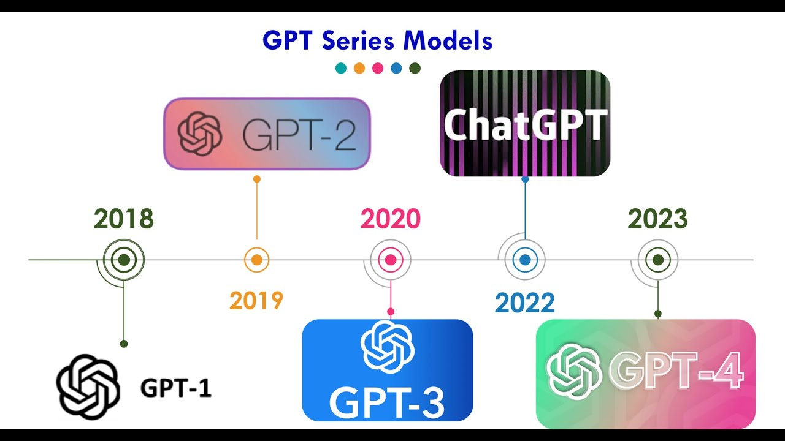
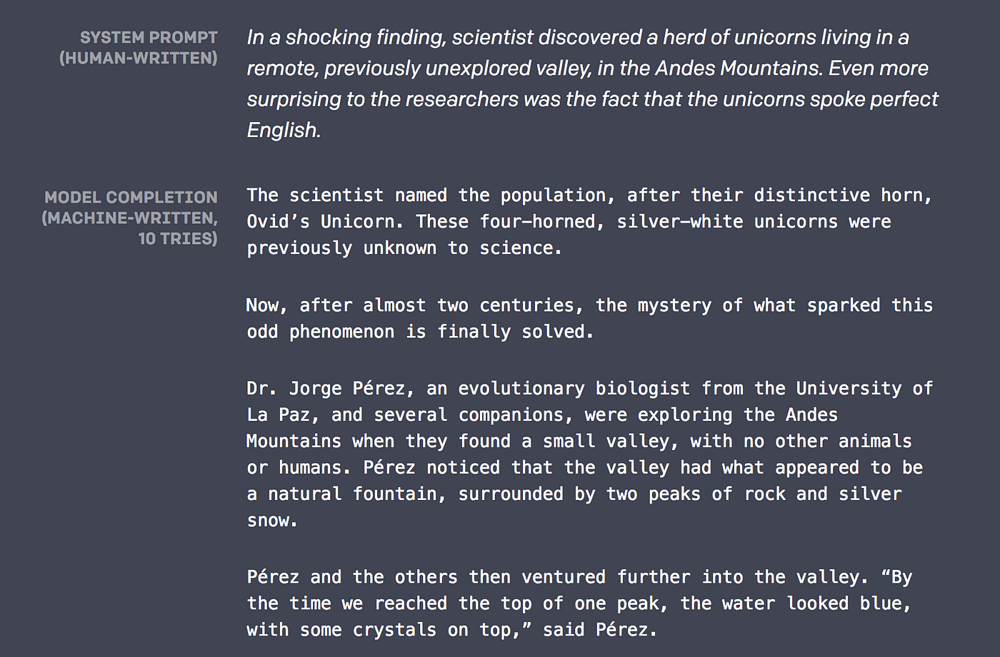
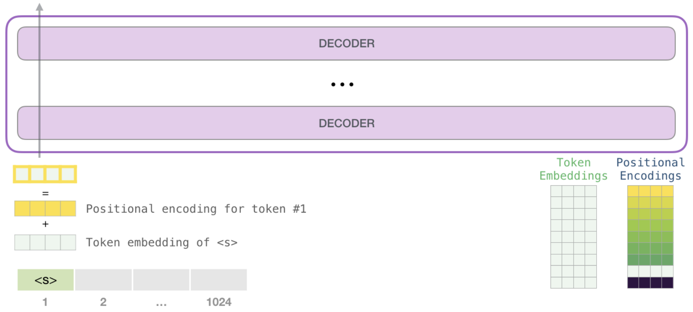
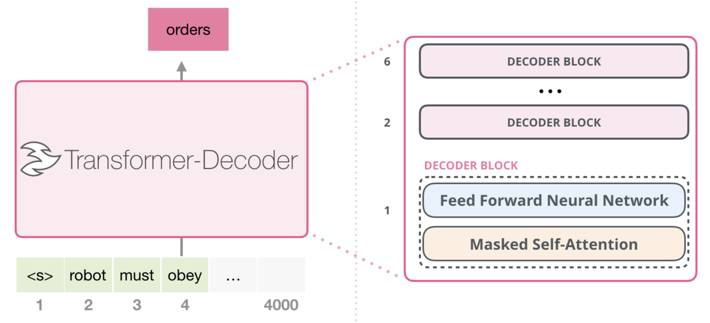

GPT#
GPT(Generative Pretrained Transformer)はTransformerベースの言語モデルです。ChatGPT などの生成系 AI アプリケーションの基礎となっている人工知能 (AI) の重要な新技術です。GPT モデルにより、アプリケーションは人間のようにテキストやコンテンツ (画像、音楽など) を作成したり、会話形式で質問に答えたりすることができます。さまざまな業界の組織が、Q&A ボット、テキスト要約、コンテンツ生成、検索に GPT モデルと生成系 AI を使用しています。
GPTはOpenAIによって定期的に新しいバージョンが公開されていますが、ここではGPT-2について解説します。


入力表現#
GPTの入力は、入力トークン列に対応するトークン埋め込み\(e_{w_i}\)と位置埋め込む\(p_i\)を加算した埋め込み列です。
事前学習#
GPTの事前学習タスクは、入力されたトークン列の次のトークンを予測することです。ここで、GPTはデコーダ構成のTransformerを用います。

学習に用いるトークン列\(w_1,w_2,...,w_N\)におけるのトークン\(w_i\)を予測することを考えます。GPTでは、予測確率を使った負の対数尤度を損失関数として事前学習を行います。
ここで、\(\theta\)はモデルに含まれるすべてのパラメータを表します。
学習時にはMasked Self-Attention機構が導入され、入力トークン列の各位置において次のトークンを予測して学習が行われます。

学習時にはMasked Self-Attention機構が導入され、入力トークン列の各位置において次のトークンを予測して学習が行われます。
ファインチューング#
GPTの事前学習済みモデルに、下流タスクに合わせて変換するためのヘッドを追加し、下流タスクのデータセットを用いてモデル全体を調整します。
GPTは下流タスクを解く際、特殊トークンを用いて入力テキストを拡張します。
テキスト分類のタスクにおいては、文書の最初に
<s>、最後に<e>が追加されます。自然言語推論のタスクにおいては、テキストの境界に
$が挿入されます。

Huggingface transformerを使う#
from transformers import pipeline
#!pip install sentencepiece
#!pip install protobuf
generator = pipeline("text-generation", model="abeja/gpt2-large-japanese")
/Users/ryozawau/anaconda3/envs/jupyterbook/lib/python3.12/site-packages/tqdm/auto.py:21: TqdmWarning: IProgress not found. Please update jupyter and ipywidgets. See https://ipywidgets.readthedocs.io/en/stable/user_install.html
from .autonotebook import tqdm as notebook_tqdm
/Users/ryozawau/anaconda3/envs/jupyterbook/lib/python3.12/site-packages/transformers/utils/generic.py:441: FutureWarning: `torch.utils._pytree._register_pytree_node` is deprecated. Please use `torch.utils._pytree.register_pytree_node` instead.
_torch_pytree._register_pytree_node(
/Users/ryozawau/anaconda3/envs/jupyterbook/lib/python3.12/site-packages/transformers/utils/generic.py:309: FutureWarning: `torch.utils._pytree._register_pytree_node` is deprecated. Please use `torch.utils._pytree.register_pytree_node` instead.
_torch_pytree._register_pytree_node(
/Users/ryozawau/anaconda3/envs/jupyterbook/lib/python3.12/site-packages/transformers/modeling_utils.py:519: FutureWarning: You are using `torch.load` with `weights_only=False` (the current default value), which uses the default pickle module implicitly. It is possible to construct malicious pickle data which will execute arbitrary code during unpickling (See https://github.com/pytorch/pytorch/blob/main/SECURITY.md#untrusted-models for more details). In a future release, the default value for `weights_only` will be flipped to `True`. This limits the functions that could be executed during unpickling. Arbitrary objects will no longer be allowed to be loaded via this mode unless they are explicitly allowlisted by the user via `torch.serialization.add_safe_globals`. We recommend you start setting `weights_only=True` for any use case where you don't have full control of the loaded file. Please open an issue on GitHub for any issues related to this experimental feature.
return torch.load(checkpoint_file, map_location=map_location)
---------------------------------------------------------------------------
ValueError Traceback (most recent call last)
Cell In[1], line 4
1 from transformers import pipeline
2 #!pip install sentencepiece
3 #!pip install protobuf
----> 4 generator = pipeline("text-generation", model="abeja/gpt2-large-japanese")
File ~/anaconda3/envs/jupyterbook/lib/python3.12/site-packages/transformers/pipelines/__init__.py:967, in pipeline(task, model, config, tokenizer, feature_extractor, image_processor, framework, revision, use_fast, token, device, device_map, torch_dtype, trust_remote_code, model_kwargs, pipeline_class, **kwargs)
964 tokenizer_kwargs = model_kwargs.copy()
965 tokenizer_kwargs.pop("torch_dtype", None)
--> 967 tokenizer = AutoTokenizer.from_pretrained(
968 tokenizer_identifier, use_fast=use_fast, _from_pipeline=task, **hub_kwargs, **tokenizer_kwargs
969 )
971 if load_image_processor:
972 # Try to infer image processor from model or config name (if provided as str)
973 if image_processor is None:
File ~/anaconda3/envs/jupyterbook/lib/python3.12/site-packages/transformers/models/auto/tokenization_auto.py:787, in AutoTokenizer.from_pretrained(cls, pretrained_model_name_or_path, *inputs, **kwargs)
783 if tokenizer_class is None:
784 raise ValueError(
785 f"Tokenizer class {tokenizer_class_candidate} does not exist or is not currently imported."
786 )
--> 787 return tokenizer_class.from_pretrained(pretrained_model_name_or_path, *inputs, **kwargs)
789 # Otherwise we have to be creative.
790 # if model is an encoder decoder, the encoder tokenizer class is used by default
791 if isinstance(config, EncoderDecoderConfig):
File ~/anaconda3/envs/jupyterbook/lib/python3.12/site-packages/transformers/tokenization_utils_base.py:2028, in PreTrainedTokenizerBase.from_pretrained(cls, pretrained_model_name_or_path, cache_dir, force_download, local_files_only, token, revision, *init_inputs, **kwargs)
2025 else:
2026 logger.info(f"loading file {file_path} from cache at {resolved_vocab_files[file_id]}")
-> 2028 return cls._from_pretrained(
2029 resolved_vocab_files,
2030 pretrained_model_name_or_path,
2031 init_configuration,
2032 *init_inputs,
2033 token=token,
2034 cache_dir=cache_dir,
2035 local_files_only=local_files_only,
2036 _commit_hash=commit_hash,
2037 _is_local=is_local,
2038 **kwargs,
2039 )
File ~/anaconda3/envs/jupyterbook/lib/python3.12/site-packages/transformers/tokenization_utils_base.py:2260, in PreTrainedTokenizerBase._from_pretrained(cls, resolved_vocab_files, pretrained_model_name_or_path, init_configuration, token, cache_dir, local_files_only, _commit_hash, _is_local, *init_inputs, **kwargs)
2258 # Instantiate the tokenizer.
2259 try:
-> 2260 tokenizer = cls(*init_inputs, **init_kwargs)
2261 except OSError:
2262 raise OSError(
2263 "Unable to load vocabulary from file. "
2264 "Please check that the provided vocabulary is accessible and not corrupted."
2265 )
File ~/anaconda3/envs/jupyterbook/lib/python3.12/site-packages/transformers/models/t5/tokenization_t5_fast.py:135, in T5TokenizerFast.__init__(self, vocab_file, tokenizer_file, eos_token, unk_token, pad_token, extra_ids, additional_special_tokens, **kwargs)
132 extra_tokens = [f"<extra_id_{i}>" for i in range(extra_ids)]
133 additional_special_tokens = extra_tokens
--> 135 super().__init__(
136 vocab_file,
137 tokenizer_file=tokenizer_file,
138 eos_token=eos_token,
139 unk_token=unk_token,
140 pad_token=pad_token,
141 extra_ids=extra_ids,
142 additional_special_tokens=additional_special_tokens,
143 **kwargs,
144 )
146 self.vocab_file = vocab_file
147 self._extra_ids = extra_ids
File ~/anaconda3/envs/jupyterbook/lib/python3.12/site-packages/transformers/tokenization_utils_fast.py:120, in PreTrainedTokenizerFast.__init__(self, *args, **kwargs)
118 fast_tokenizer = convert_slow_tokenizer(slow_tokenizer)
119 else:
--> 120 raise ValueError(
121 "Couldn't instantiate the backend tokenizer from one of: \n"
122 "(1) a `tokenizers` library serialization file, \n"
123 "(2) a slow tokenizer instance to convert or \n"
124 "(3) an equivalent slow tokenizer class to instantiate and convert. \n"
125 "You need to have sentencepiece installed to convert a slow tokenizer to a fast one."
126 )
128 self._tokenizer = fast_tokenizer
130 if slow_tokenizer is not None:
ValueError: Couldn't instantiate the backend tokenizer from one of:
(1) a `tokenizers` library serialization file,
(2) a slow tokenizer instance to convert or
(3) an equivalent slow tokenizer class to instantiate and convert.
You need to have sentencepiece installed to convert a slow tokenizer to a fast one.
generated = generator(
"東北大学は",
max_length=100,
do_sample=True,
num_return_sequences=3,
top_p=0.95,
top_k=50,
pad_token_id=3
)
print(*generated, sep="\n")
{'generated_text': '東北大学は、学術的な情報や、学生・院生に関する情報などを掲載した学生・院生情報誌の発行や、留学生および外国人研究者向けの日本語学習教材の開発を予定しています。 文部科学省は、平成25年度から3年間を計画期間とする、大学国際化推進プログラムの実施に向けた具体的な検討を始めた。 平成25年度と平成26年度の2年間にわたる大学国際化推進プログラムは、大学発の産学連携や国際交流への取り組みを促進させるとともに、大学'}
{'generated_text': '東北大学は「学生の本分は学業」であることは勿論であるが、学問と研究は同時に行わなければ達成できない。研究は単なる自己満足ではなく、社会に有益な研究が不可欠である。このような基本姿勢をもって、各年次における教育活動が行われており、本学の教職員は大学教育の責務と自覚をもって、大学教育の改善に積極的に努めることを学則で定めております。 本学は、社会の要請及び大学の存在意義に応えるために'}
{'generated_text': '東北大学は、東日本大震災での教訓を踏まえ、地震による建物被害を防ぐため、建築確認等の制度を抜本的に改正して、平成28年10月に新建築基準法が施行されました。新建築基準法に基づく確認調査・評価制度では、建築物の耐震性や設計・施工等のあり方を客観的な手法で調査・評価し、その結果として必要な対策を講ずることを定めています。 宮城県建築士事務所協会では、建築士事務所協会の会員の皆さまの自主的な建築基準'}